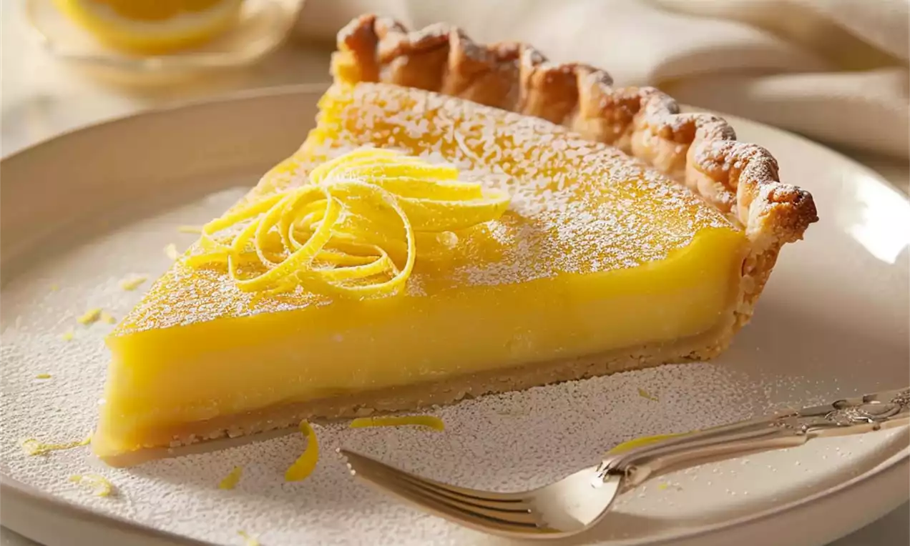

Lemon Tart
By Chef Rjay · July 6, 2025
A zesty and refreshing dessert with a buttery shortcrust base and smooth lemon filling. Perfect for summer gatherings.
Tags:
Dessert
Tart
Citrus
Category:
Dessert
Baking
Ingredients
- 1 cup all-purpose flour
- 1/2 cup unsalted butter, cold and cubed
- 1/4 cup powdered sugar
- 3 large eggs
- 3/4 cup granulated sugar
- 1/2 cup lemon juice (fresh)
- 1 tbsp lemon zest
- 1/4 cup heavy cream
Instructions
- Preheat oven to 350°F (175°C). Grease a tart pan.
- Mix flour, butter, and powdered sugar until crumbly. Press into pan. Bake for 15 minutes.
- Whisk eggs, sugar, lemon juice, zest, and cream. Pour into crust.
- Bake 20–25 minutes until set. Cool completely before serving.
- Optional: Dust with powdered sugar before serving.
Share:
← Back to Blog
Comments